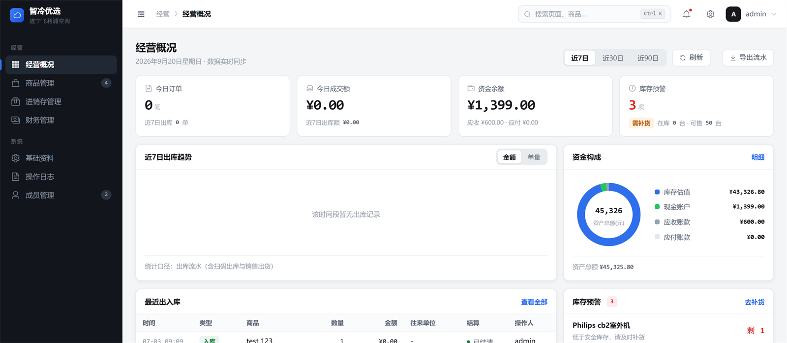

AI Native 工程闭环
以 Codex、Claude Code 为核心构建“需求拆解 → 产品设计 → 代码生成 → 调试验证 → 迭代优化”的完整开发闭环，独立交付多个系统并完成服务器环境搭建、部署上线与线上验证。
- Agentic Coding
- Skill / Workflow
- 多 Agent 并行
// SYSTEM_TIME --:--:-- · OPERATOR_ECOKATER · LOC 四川成都
电子信息工程 · 2026 届本科 嵌入式 × 机器视觉 × AI NATIVE 工程
能读懂原理图、跑得动 FreeRTOS，也能用 Codex / Claude Code 把一个需求从拆解一路推到部署上线。做过网球捡球机器人、端侧地震检测装置，也独立交付过真实运营中的微信商城系统。

// 硬件到软件的完整工程意识，加上 AI Native 的交付速度。
以 Codex、Claude Code 为核心构建“需求拆解 → 产品设计 → 代码生成 → 调试验证 → 迭代优化”的完整开发闭环，独立交付多个系统并完成服务器环境搭建、部署上线与线上验证。
熟练 STM32、ESP32 与华为海思 MCU 开发，掌握 FreeRTOS 移植与任务管理、LVGL 界面开发与 OpenMV 视觉识别，能阅读原理图并排查信号链路，完成“感知 - 决策 - 执行”系统闭环。
独立交付微信小程序商城与配套仓库管理系统，打通商品展示、下单、订单处理与库存管理流程，支持多角色权限与审批；系统已真实落地并投入使用，支撑业务运营与持续版本迭代。
实用新型专利一份、软件著作权一份；蓝桥杯 Python 组三等奖；两年半实验室科研助理经历，负责数据爬取、自动化整理分析与可视化，具备把数据处理流程沉淀为可复用工具的实践经验。
主修：嵌入式软件设计、数据库技术及应用、计算机网络、算法与数据结构、高级语言程序设计、数字信号处理、通信原理、ARM 单片机原理、数字 / 模拟电路与技术等。
// 8 组能力模块，覆盖底层驱动、通信协议、AI 工具链与产品工程。
熟练 STM32、ESP32 与华为海思 MCU 开发，掌握 GPIO / UART / I2C / SPI / PWM / CAN 等驱动；熟练 FreeRTOS 移植与任务管理、LVGL 与 EEZ Studio 界面开发；熟练 OpenMV 视觉识别，能阅读原理图并排查信号链路。
熟练掌握 C / C++、Python、Lua；熟悉链表、栈、队列、树、图等数据结构与常用算法；了解多线程、锁机制与进程间通信。
熟练使用 Codex、Claude Code 与 Orca（ADE）进行需求拆解、代码生成、调试验证与多 Agent 并行开发，具备 Skill / Workflow 及 Loop Engineering 实践经验；能运用无限画布、OpenDesign 完成原型验证，并以 Obsidian 沉淀知识库。
熟练 Keil / STM32CubeIDE / CubeMX / CLion / VSCode / Cursor 嵌入式开发；熟练 Git / CMake 工程管理；了解后端接口、数据库与基础部署。
熟悉 TCP / UDP / MQTT 等通信模型及广播 / 组播应用；熟悉 Linux / 类 Unix 常用命令与 Shell 环境操作；熟练 gcc 编译与调试。
了解大模型应用、Prompt 优化、RAG 检索增强、知识问答、内容生成、Agent / 工作流等基础概念，并能结合业务场景拆解功能。
具备 Python 数据分析与机器学习建模能力；熟练编写自动化脚本与网络数据采集，显著提升调试与测试效率。
能从需求文档出发完成原型验证、功能联调、问题反馈、效果评估与迭代记录，具备较强学习能力和工程落地意识。
// 嵌入式系统、端侧 AI、微信商城与开源 Agent 工具，均已完成实物或线上验证。



原生 macOS 菜单栏仪表盘，集中查看 AI 编程额度、Token 用量与电脑运行状态。

本地优先、长期记忆驱动的数字生命与 AI 陪伴平台，支持 Web、桌面与移动端。

让 Claude 自动调用 Codex 完成独立编码任务，并由 Claude 统一设计、审查与合并。

让 Codex 请求 Claude 提供设计、代码审查、合并判断与最终验证。
Skill、脚本、嵌入式实验与前端原型，都放在 GitHub 上持续更新。
GITHUB.COM/ECOKATER ↗// 从实验室科研助理到游戏公司实习，再到 AI Native 产品主理人。
AI Native 游戏产品主理人
游戏策划实习生
科研助理
连接感知、控制、通信与软件，
完成从原型到系统实现。
具备从需求拆解、接口联调、功能调试到部署验证的完整工程意识；学习能力强，对 AI 应用落地有持续兴趣，能快速理解业务场景并主动推进问题闭环。
// 专利、软著、语言与竞赛成绩记录。
一份 · 已授权
一份 · 已登记
三等奖
已通过
单打第二名